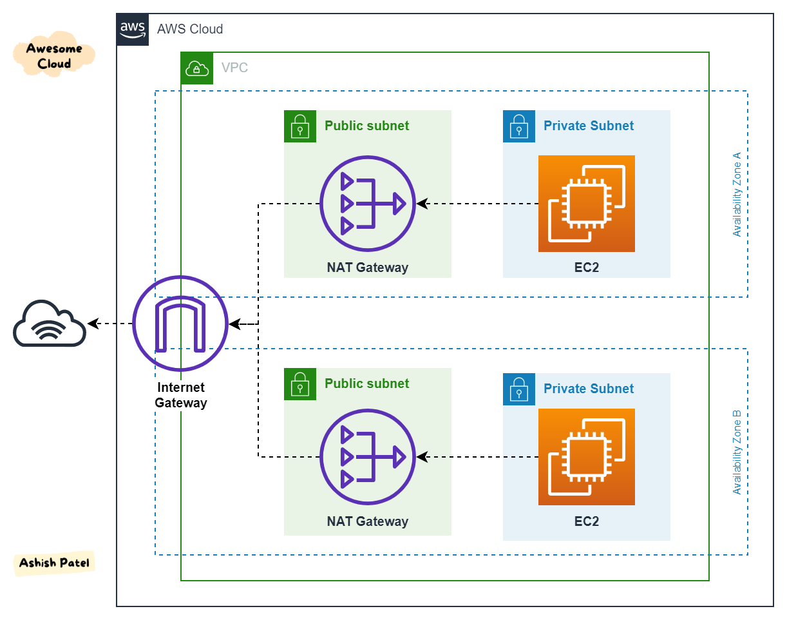

Beschreibung
Ein Internet Gateway ist eine essenzielle Komponente in der Amazon Web Services (AWS) Cloud-Infrastruktur, die die Verbindung zwischen Ihrer Virtual Private Cloud (VPC) und dem Internet ermöglicht.
Es fungiert als zentraler Anlaufpunkt für den Internetverkehr innerhalb Ihrer VPC-Routentabelle. Die Hauptfunktionen des Internet Gateways umfassen die Vermittlung des Datenverkehrs zwischen den Ressourcen in Ihrer VPC und dem Internet.
Dabei spielt es eine entscheidende Rolle, indem es als Schnittstelle fungiert und den reibungslosen Austausch von Informationen zwischen Ihren Cloud-Ressourcen und dem globalen Internet ermöglicht. Eine seiner zentralen Aufgaben ist die Durchführung der Netzwerkadressübersetzung (NAT) für die in Ihrer VPC bereitgestellten Instanzen.
Dieser Prozess gewährleistet, dass die Kommunikation zwischen den in Ihrer VPC gehosteten Ressourcen und dem Internet nahtlos erfolgt, ohne dass komplexe Konfigurationen auf den Instanzen selbst erforderlich sind.
Es ist wichtig zu beachten, dass ein Internet Gateway nicht für die Herstellung einer privaten Verbindung zwischen einem lokalen Rechenzentrum und der AWS Cloud verwendet werden kann. Seine Funktionalität konzentriert sich vielmehr darauf, Ihrer VPC den erforderlichen Zugang zum Internet zu verschaffen und gleichzeitig eine sichere und effiziente Kommunikation für Ihre Cloud-Ressourcen zu gewährleisten.
* Internet Gateway (IGW) ist eine entscheidende AWS-Infrastrukturkomponente für die Verbindung zwischen Ihrer Virtual Private Cloud (VPC) und dem Internet.
* Dient als zentraler Anlaufpunkt für den Internetverkehr in der VPC-Routentabelle.
* Hauptfunktionen umfassen die Vermittlung des Datenverkehrs zwischen Ihrer VPC und dem Internet.
* Fungiert als Schnittstelle für den Austausch von Informationen zwischen Ihren Cloud-Ressourcen und dem globalen Internet.
* Führt Netzwerkadressübersetzung (NAT) für in der VPC bereitgestellte Instanzen durch, um nahtlose Kommunikation zu ermöglichen.
* Nicht zur Herstellung privater Verbindungen zwischen lokalen Rechenzentren und der AWS Cloud geeignet.
* Konzentriert sich auf die Bereitstellung von Internetzugang für VPCs und die Sicherstellung sicherer, effizienter Kommunikation für Cloud-Ressourcen.
Schlüsselwörter
> > > Schlüsselworte bzw. Schlagworte sollen uns dabei helfen, einen Service leichter zu erkennen, wenn es um Prüfungsfragen geht. Ließ dir die Fragen richtig durch und achte auf folgende Schlüsselworte. Sie können dir bei der Beantwortung der Fragen helfen.
- Container-Orchestrierung: ECS ermöglicht daren von Docker-Containern in der AWS-Cloud.
- Container-Definitionen: Definition von Containber die Verwendung von Aufgaben (Tasks) und Services.
- Docker-Integration: ECS unterstützt Docker-Container und ermöng von Docker-Images.
- Task-Definitionen: Spezifikationen, wie eine Aufgabe (Task) in einvon Services, um langfristig laufende Anwendungetartet und Aufgaben ausgeführt werden.
- Auto Scaling: Automatische Anpassung der Anzahl von las basieinierbaren Metriken.
- Load Balancing: Integration mit dem Elastic Load Balancing-Dienst für die Lr.
- AWS Fargate: Option zur Ausführung von Containern ohne die Notwendigkeit, EC2.
- Integration mit Amazon ECR: Nahtlose Integration mit d
Grafische Erklärung
Prüfung Fragen
- Welche der folgenden Einheiten sind Teil einer VPC in der AWS Cloud?
- Welche Funktion erfüllt das Internet Gateway in einer VPC-Umgebung in der AWS Cloud?
- Welche Aufgabe hat das Internet Gateway in Bezug auf eine VPC in der AWS Cloud?